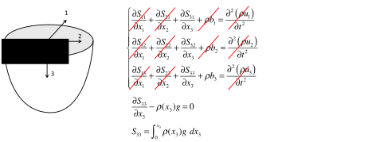
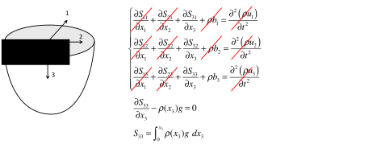
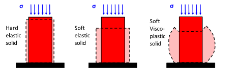
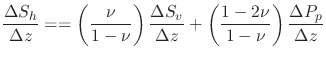
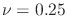
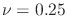
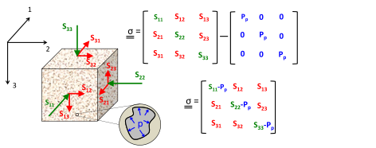

Next: 3.4 Elastic anisotropy Up: 3. Fundamentals of Solid Previous: 3.2 Kinematic equations: displacements Contents
Constitutive equations tell us how a solid deforms (in time) as a response to stresses, to changes of temperature and to changes of pore pressure among others. How to choose a constitutive equation depends on the material properties, the magnitude of strain changes, the magnitude of stresses, and the loading rate among other factors.
The simplest constitutive relationship for solids is linear elasticity, in which stresses and strains are linearly related by constant coefficients. The examples in Figure 3.10 correspond to applications of linear elasticity in various dimensions:
 [N] required to produce an elongation
[N] required to produce an elongation  [m] in a spring with mechanical constant
[m] in a spring with mechanical constant  [N/m] is
[N/m] is
| (3.9) |
 and length . The force required to produce an elongation [m] is inversely proportional to , and proportional to proportional to , and  (the stiffness modulus of the solid), such that
and length . The force required to produce an elongation [m] is inversely proportional to , and proportional to proportional to , and  (the stiffness modulus of the solid), such that
 |
(3.10) |
 and strain
and strain

| (3.11) |
 through the stiffness tensor
through the stiffness tensor

 |
(3.12) |
Consider a prismatic solid with length to which we apply a stress
 on top face 3 (Figure 3.11).
The bottom face is not allowed to move in direction 3 but it can slide sideways.
The four other faces are free to move in all directions.
Notice that the top face can also deform in directions 1 and 2.
The Young modulus is defined as the ratio between the applied stress
and the resulting strain (in the direction of the applied stress)
on top face 3 (Figure 3.11).
The bottom face is not allowed to move in direction 3 but it can slide sideways.
The four other faces are free to move in all directions.
Notice that the top face can also deform in directions 1 and 2.
The Young modulus is defined as the ratio between the applied stress
and the resulting strain (in the direction of the applied stress)

 (or
(or
 ) and the strain in the direction of the applied stress
These two coefficients are the two coefficients conventionally used as elasticity constants in continuum mechanics.
We will see later that in the subsurface we almost never find conditions of laterally “unconfined” stress loading like the one shown in Figure 3.11.
) and the strain in the direction of the applied stress
These two coefficients are the two coefficients conventionally used as elasticity constants in continuum mechanics.
We will see later that in the subsurface we almost never find conditions of laterally “unconfined” stress loading like the one shown in Figure 3.11.
The real behavior of rocks differs from the linear elastic assumption.
Figure 3.12 shows a schematic representation of a typical unconfined loading test.
The figure plots axial stress in the vertical axis and axial strain
 in the horizontal axis.
Often, rock plugs are not perfectly parallel or may have some microcracks.
Both features make the initial loading stress-strain behavior look less stiff than the actual rock stiffness.
After the initial loading, the rock may show a linear response -where the Young modulus is measured- followed by softening approaching rock failure and the peak stress.
When the test is performed under unconfined conditions, the peak stress is termed the “unconfined compressive strength (UCS)” of the rock (further explained in Section 4).
The Poisson ratio can be measured in the same range of the measurement of when lateral strain transducers are available.
in the horizontal axis.
Often, rock plugs are not perfectly parallel or may have some microcracks.
Both features make the initial loading stress-strain behavior look less stiff than the actual rock stiffness.
After the initial loading, the rock may show a linear response -where the Young modulus is measured- followed by softening approaching rock failure and the peak stress.
When the test is performed under unconfined conditions, the peak stress is termed the “unconfined compressive strength (UCS)” of the rock (further explained in Section 4).
The Poisson ratio can be measured in the same range of the measurement of when lateral strain transducers are available.
The Young modulus of sediments and rocks varies widely. Figure 3.13 shows typical values of Young's modulus.
 |
EXAMPLE 3.2: Compute the (axial) strain expected for a rock subjected to 3,000 psi of (axial) stress under unconfined axial loading for:
SOLUTION
Let us work in SI units:
 psi
psi MPa
MPa MPa
MPa


Notice that rocks can be quite stiff and even for an effective stress as large as 3,000 psi (equivalent to a depth onshore of 5,000 ft under hydrostatic pore pressure), the deformation is in the order of 1% to 0.1% or less.
A generalization of the Young's modulus and Poisson's ratio equations (Eq. 3.13 and 3.14) in all directions leads to the 3 independent equations.
|  | (3.15) |
In addition, shear strains
 are proportional to the applied shear stress through shear modulus
, such that,
are proportional to the applied shear stress through shear modulus
, such that,
| (3.16) |
Hence, all six equations permit putting together the shear strain tensor
as a function of the stress tensor
through compliance fourth-order tensor
 .
.
 |
(3.17) |
For ease of calculation, we will express the stress and strain tensors as
 matrices, such that
will be a
matrices, such that
will be a
 matrix.
This notation is called Voigt notation.
Hence, fourth-order tensor
can be expressed as a
matrix:
matrix.
This notation is called Voigt notation.
Hence, fourth-order tensor
can be expressed as a
matrix:
![\begin{displaymath}%compliance matrix
\left[
\begin{array}{c}
\varepsilon_{11} ...
...ma_{13} \cfrac{}{}\\
\sigma_{12} \cfrac{}{}
\end{array}\right]\end{displaymath}](img355.svg) |
(3.18) |
For example, let us apply a stress
as in example in Figure 3.11.
The result of
 is
is
![$\displaystyle \uuline{\varepsilon} = \left [ -\cfrac{\nu}{E} \: \sigma_{33},-\cfrac{\nu}{E} \: \sigma_{33},\cfrac{1}{E} \: \sigma_{33},0,0,0 \right]^T $](img358.svg)
 .
.
The inverse of the compliance matrix is the stiffness matrix and let us calculate stress as a function of strain.
Voigt notation is easier to code in computer codes that work with matrices.
The Lamé equations are the same equations shown above but use the Lamé parameters  and instead of and .
For example, let us write the first equation of the product of the stiffness tensor and the strain tensor in Voigt notation:
and instead of and .
For example, let us write the first equation of the product of the stiffness tensor and the strain tensor in Voigt notation:
![$\displaystyle \sigma_{11} = \cfrac{E}{(1+\nu)(1-2\nu)}
\left[ (1-\nu) \varepsilon_{11} + \nu \varepsilon_{22} + \nu \varepsilon_{33} \right]$](img363.svg) |
or equivalently
 |
where the Lamé parameters are:
| (3.20) |
and
 |
(3.21) |
Notice that  , the shear modulus as defined above.
Putting equations in all directions together yields the complete set of Lamé's equations:
, the shear modulus as defined above.
Putting equations in all directions together yields the complete set of Lamé's equations:
EXAMPLE 3.3: Write the Lamé equations (Eq. 3.22) in matrix format using the Voigt notation.
SOLUTION
Remember that there are only two independent constitutive parameters in linear isotropic elasticity.
The usual pair choice is and .
However, there are other options depending on the application and equations used, e.g,  and
and  .
A complete list of parameter pairs is available scrolling to the bottom in https://en.wikipedia.org/wiki/Young's_modulus.
Figure 3.14 list the most common equivalencies.
.
A complete list of parameter pairs is available scrolling to the bottom in https://en.wikipedia.org/wiki/Young's_modulus.
Figure 3.14 list the most common equivalencies.
![\includegraphics[scale=0.55]{.././Figures/split/4-21.pdf}](img372.svg) |
Porous solids deform and fail due to the application of effective stresses rather than total stress.
Hence, Hooke's law requires to use the effective stress tensor rather than the total stress tensor.
The equation
 is incorrect.
Instead, the stress-strain relationship requires effective stress:
is incorrect.
Instead, the stress-strain relationship requires effective stress:
Pore pressure has an effect on normal stresses only (fluid pressure would not be able to cause solid shear strains). Hence, only pore pressure is subtracted from the diagonal terms of the total stress tensor. The subtracted value is the same in all directions because pore pressure is the same in all directions at a given point location.
Rigorously, the effective stress tensor needs a correction of pore pressure by the Biot coefficient  that accounts for solid grain deformation with changes in pore pressure.
that accounts for solid grain deformation with changes in pore pressure.
| (3.24) |
For most problems, the assumption of
 is satisfactory.
The rock matrix of tight sandstones and shales may have a Biot coeffiecient as low as
is satisfactory.
The rock matrix of tight sandstones and shales may have a Biot coeffiecient as low as
 .
The theory of poroelasticity is covered in the “Advanced Geomechanics” course with a brief introduction in Section 3.7.1.
.
The theory of poroelasticity is covered in the “Advanced Geomechanics” course with a brief introduction in Section 3.7.1.
Let us revisit the problem of stress calculation in a half-space, such as the Earth's shallow subsurface.
We already know that the vertical total stress (
 ) is a function of depth and rock bulk mass density.
) is a function of depth and rock bulk mass density.
 |
(3.25) |
The effective vertical stress will be
 |
(3.26) |
Let us now assume that the half space did not deform in horizontal directions (
 ). This means that the solid is laterally contained at “repose” and no additional strains have been added either compressive or tensile.
Such is the case of a sedimentary basin with no additional tectonic strains.
). This means that the solid is laterally contained at “repose” and no additional strains have been added either compressive or tensile.
Such is the case of a sedimentary basin with no additional tectonic strains.
 |
Let us now use Equation 3.23 together with the equilibrium equation. Shear strains are zero. Hence . Then, the multiplication of , results in
 |
(3.27) |
Let us express
as a function of
, and plug it in the equation for horizontal stresses
 and
.
The result is
and
.
The result is
 |
(3.28) |
or equivalently
For typical values of
 , the horizontal stress coefficient is
, the horizontal stress coefficient is
 (Figure 3.17).
Thus, the effective horizontal stress is approximately one third of the effective vertical stress.
Contrary to a fluid, the solid does not push sideways with all its weight.
It pushes sideways with just a fraction of its weight proportionally to its tendency to deform sideways, i.e., the Poisson ratio.
Notice that
(Figure 3.17).
Thus, the effective horizontal stress is approximately one third of the effective vertical stress.
Contrary to a fluid, the solid does not push sideways with all its weight.
It pushes sideways with just a fraction of its weight proportionally to its tendency to deform sideways, i.e., the Poisson ratio.
Notice that
 implies
implies
 .
An “effective”
.
An “effective”
 is applicable for fluids, soft rocks under undrained loading, and salt rocks.
is applicable for fluids, soft rocks under undrained loading, and salt rocks.
The total horizontal stresses are obtained by adding pore pressure to the effective horizontal stresses: and .
Equation 3.29 allows us to approximate a lower bound for the fracture gradient, that is, the pressure required to open a hydraulic fracture. Such pressure will be equal or greater than the minimum horizontal total stress (assuming zero tectonic strains):
| (3.30) |
The gradient is the variation of pressure (or stress) with depth, i.e., derivative with respect to depth  .
Assuming that the material properties are constant, then,
.
Assuming that the material properties are constant, then,
For example, for onshore conditions with typical values
 psi/ft,
psi/ft, and
 , the fracture gradient is
 psi/ft. Figure XX shows a schematic example of the calculated fracture gradient.
, the fracture gradient is
 psi/ft. Figure XX shows a schematic example of the calculated fracture gradient.
Let us now relax the assumption of horizontal strains equal to zero, such that they are not zero
, but are known quantities.
We use the equation
 again. Shear strains are zero.
Hence
.
The resulting equations are,
again. Shear strains are zero.
Hence
.
The resulting equations are,
| (3.32) |
Let us now substitute
in the equations of
and
as a function of
. The result is:
 |
(3.33) |
Horizontal strains are usually caused by tectonic plate movement. Hence, we can call them “tectonic strains”.
Let us call
 the maximum (compressive) tectonic strain, and
the maximum (compressive) tectonic strain, and
 the minimum tectonic strain in a given direction.
As a result the maximum effective horizontal stress and minimum horizontal stresses are:
the minimum tectonic strain in a given direction.
As a result the maximum effective horizontal stress and minimum horizontal stresses are:
where is called the plane strain modulus. We will see later that the plane strain modulus, rather than the Young's modulus, appears in many of the equations of interest to subsurface applications. These equations have been coded in a Jupyter notebook available at https://mybinder.org/v2/gh/dnicolasespinoza/GeomechanicsJupyter/master?filepath=HorizontalStresses_Widget.ipynb. The above algorithm further assumes a linear increase of strain with depth.
The following workflow is valid to calculate horizontal total stress with any constitutive (rock property) model:

 .
.
 is given.
is given.
 and
and
 :
:
EXAMPLE 3.4:
Calculate the total horizontal stresses in a section of the Barnett Shale located at 7,950 ft (TVD) using the theory of linear elasticity.
Assume a constant vertical stress gradient
MPa/km, overpressure parameter
, shale Young's modulus
 psi, Poisson's ratio
psi, Poisson's ratio
 , and tectonic strains
and
, and tectonic strains
and
 .
.
SOLUTION
At a depth of 7950 ft


 |
Finally, let us compute the total horizontal stresses by adding pore pressure:
The rock pore volume compressibility  is a critical parameter in the fluid flow mass conservation equation and therefore on the diffusivity equation (1D example):
is a critical parameter in the fluid flow mass conservation equation and therefore on the diffusivity equation (1D example):
 |
(3.35) |
Where the total compressibility is
 .
Reservoir simulators usually calculate the fluid compressibility
based in phase behavior, hence, the only required input is .
For example, compaction drive is proportional to rock compressibility (see https://petrowiki.org/Compaction_drive_reservoirs).
.
Reservoir simulators usually calculate the fluid compressibility
based in phase behavior, hence, the only required input is .
For example, compaction drive is proportional to rock compressibility (see https://petrowiki.org/Compaction_drive_reservoirs).
The pore volume compressibility tells us what the change of pore volume is due to a change in pore pressure:
 |
(3.36) |
The equation above captures reservoir boundary conditions in which the total vertical stress remains constant (overburden above the reservoir does not change) and there is no change of lateral strain
 , a condition also termed as “uniaxial strain” deformation.
Such condition is appropriate in long and thin reservoirs with a compliant caprock (Figure 3.19).
, a condition also termed as “uniaxial strain” deformation.
Such condition is appropriate in long and thin reservoirs with a compliant caprock (Figure 3.19).
The measurements of are derived from bulk volume measurements.
Let us assume that the change of pore volume
 is equal to the change of bulk volume
is equal to the change of bulk volume
 , which means that all bulk deformation is caused by change of porosity.
Hence it is possible to rewrite the definition of as
, which means that all bulk deformation is caused by change of porosity.
Hence it is possible to rewrite the definition of as
 |
(3.37) |
Porosity is defined as
and the term between parenthesis is defined as the bulk compressibility under uniaxial condition  (notice
(notice
 ).
Hence, the parameter is linked to the bulk rock compressibility through porosity:
).
Hence, the parameter is linked to the bulk rock compressibility through porosity:
 |
(3.38) |
where the bulk compressibility with no lateral strain is approximately equal to the inverse of the bulk constrained modulus
 , where
, where
![$M = (1-\nu) E / [(1+\nu)(1-2\nu)]$](img433.svg) for an isotropic elastic solid.
The approximation is due to a correction needed to account for grain compressibility.
Finally, we can calculate the uniaxial strain pore compressibility using the typical mechanical parameters and as,
for an isotropic elastic solid.
The approximation is due to a correction needed to account for grain compressibility.
Finally, we can calculate the uniaxial strain pore compressibility using the typical mechanical parameters and as,
 |
Unfortunately, the theory of linear elasticity is quite limited to capture the visco-elasto-plastic behavior of rocks upon depletion during long times and with large strains. Hence, Eq. 3.39 is just a first order approximation.
Typical values of pore volume compressibility vary from 2 to 30
 psi
psi , where
psi
, where
psi sip.
Stiff well cemented rocks have low pore volume compressibility
sip.
Stiff well cemented rocks have low pore volume compressibility
 sip while uncemented loose sediments tend to have high pore volume compressibility
sip.
sip while uncemented loose sediments tend to have high pore volume compressibility
sip.
EXAMPLE 3.5: Calculate the pore compressibility of a rock tested in the laboratory with porosity
 , Young's modulus
, Young's modulus  GPa, and
GPa, and
 . Provide the solution in [
. Provide the solution in [ psi] units.
psi] units.
SOLUTION
The constrained modulus is

The general solution of a linear elasticity problem requires combining the equilibrium, kinematic, and constitutive equations.
The result is a differential equation with displacement  as the unknown:
as the unknown:
where
![$\lambda = (\nu E)/[(1+\nu)(1-2\nu)]$](img446.svg) is the first Lamé parameter, is the shear modulus, is the rock bulk mass density, and
is the first Lamé parameter, is the shear modulus, is the rock bulk mass density, and  is the body force acceleration vector (usually gravity).
A review of the gradient
is the body force acceleration vector (usually gravity).
A review of the gradient  , divergence
, divergence
 and Laplacian
and Laplacian
 operators is available at https://en.wikipedia.org/wiki/Vector_calculus_identities. In summary, these are all derivatives that quantify changes of displacement in space.
operators is available at https://en.wikipedia.org/wiki/Vector_calculus_identities. In summary, these are all derivatives that quantify changes of displacement in space.
The solution requires knowledge of the domain geometry, boundary conditions and initial conditions. For example, a hydraulic fracture simulator solves numerically these same equations (Figure 3.20). I this class, we will see analytical solutions of this equation for 1) displacements and stresses around wellbores, and 2) displacements and stresses around planar fractures.
![\includegraphics[scale=0.65]{.././Figures/split/4-12.pdf}](img315.svg)
![\includegraphics[scale=0.50]{.././Figures/split/4-13.pdf}](img328.svg)


![\includegraphics[scale=0.55]{.././Figures/split/4-26.pdf}](img375.svg)


![\includegraphics[scale=0.55]{.././Figures/split/4-GeneralContMechProblem.PNG}](img450.svg)